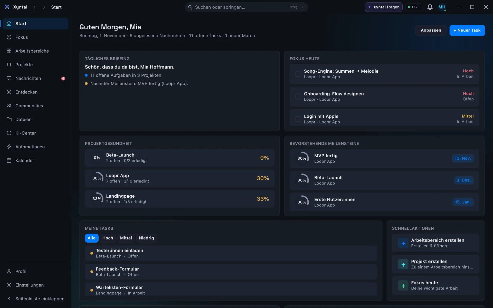
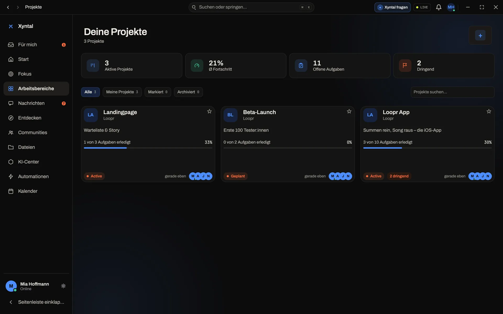

Erst mal: Wer ist überhaupt da?
Unter „Entdecken“ siehst du Leute, Projekte und Communities, sortiert danach, wie gut sie zu dir passen.
Du beschreibst, was du vorhast, und Xyntal zeigt dir, wer dazu passt und warum.
Auf LinkedIn steht, was jemand kann. Ob die Person gerade Zeit hat, was sie erwartet und zu welchen Bedingungen sie einsteigen würde, steht da nicht. Das wollte ich aber wissen, bevor ich jemandem schreibe.
Nico, 19, arbeitet in der IT
Matching
Unter „Entdecken“ siehst du Leute, Projekte und Communities, sortiert danach, wie gut sie zu dir passen.
Hinter der Passung stecken zehn Bereiche, gewichtet zusammengezählt. Dieselben Angaben ergeben immer dieselbe Zahl, und eine bessere Platzierung kann niemand kaufen.
Bei jedem Vorschlag liest du, was die Person mitbringt, was deinem Profil fehlt und was der nächste Schritt wäre.
Jeder Bereich steht einzeln da, mit Punkten. Wenn dich eine Zahl wundert, schaust du nach, woher sie kommt.


Zählt nie
Der Weg
WeiterscrollenWischen →
Konto anlegen, drei Fragen beantworten: Was baust du? Wen suchst du? Wie viel Zeit hast du? Ich lese jede Bewerbung selbst und antworte per Mail.
Skills, Tech-Stack, Ziele, Sprachen, Stunden pro Woche. Und unter welchen Bedingungen du einsteigst: als Mitgründer:in, bezahlt oder als Nebenprojekt.
28 Blöcke. Jedes Mal wählst du, was am meisten und was am wenigsten zu dir passt. Zwei, die beide nur antreiben, sind nicht automatisch das beste Team.
Ab 65 Punkten taucht jemand bei dir auf, mit Zahl, Begründung und den zehn Bereichen einzeln.
Du schreibst direkt. Damit das kein Spam-Kanal wird, gibt es Grenzen: höchstens drei neue Gespräche pro Stunde.
Projekt anlegen, offene Rollen eintragen. Wer mitmachen will, meldet sich mit „Ich wäre dabei“.
Die App
Gearbeitet wird in der App für Mac und Windows. Vorschläge, Projekte und Nachrichten an einem Ort. Die Bilder sind aus der echten App, mit Beispieldaten.



Stand heute
Was schon läuft und was noch fehlt.
Statt
Du siehst Titel und Fähigkeiten. Ob jemand gerade Zeit hat oder überhaupt mitmachen will, siehst du nicht.
Profile enthalten Zeit, Erwartungen und die Bedingungen, zu denen jemand einsteigt.
Viele Leute, kein Filter. Du fragst in die Runde und hoffst, dass sich jemand Passendes meldet.
Du beschreibst, wen du suchst. Vorgeschlagen wird dir nur, wer mindestens 65 Punkte erreicht.
Ob du jemanden findest, hängt davon ab, wen dein Umfeld zufällig kennt.
Du erreichst auch Leute, die in deinem Umfeld niemand kennt.
Dort gibt es bezahlte Aufträge. Mitgründung oder ein Nebenprojekt kommt nicht vor.
Mitgründung, bezahlte Aufgabe und Nebenprojekt sind gleichwertige Wege.
Erst nach dem dritten Gespräch stellt sich heraus: keine Zeit, andere Erwartung.
Zeit und Erwartung stehen im Profil, bevor ihr euch schreibt.
Wer wollte mitmachen? Steht irgendwo zwischen zweihundert anderen Nachrichten.
Ein Projekt, offene Rollen und alle Meldungen an einem Ort.
Wer das baut
Ich wollte etwas Eigenes aufbauen und hatte niemanden, mit dem ich es hätte tun können. Also baue ich das Werkzeug, das mir gefehlt hat.
Ich bin Nico, 19, und arbeite in der IT. Xyntal ist mein Projekt. Jede Bewerbung lese ich selbst, und ich antworte per Mail.
Wenn du etwas vorhast, bewirb dich. Ich bin gespannt, was du baust.
Der ganze BriefDu hast die Idee.
In der Beta kostet Xyntal nichts.
Mitglieder ansehenDu bist schon dabei. Schön, dass du da bist.
Stand deiner BewerbungDeine Bewerbung ist da. Ich lese sie selbst und antworte per Mail.
Noch nichts Konkretes vor? Dann sag ich dir Bescheid, wenn Xyntal für alle offen ist. Ich schreibe nur, wenn es etwas Neues gibt.